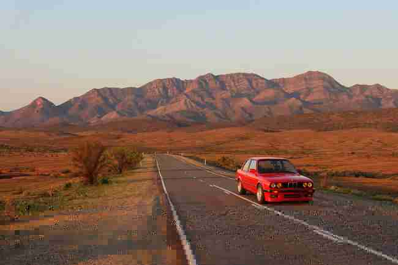
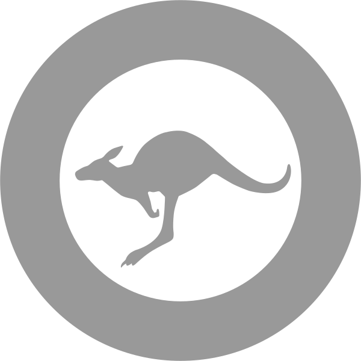
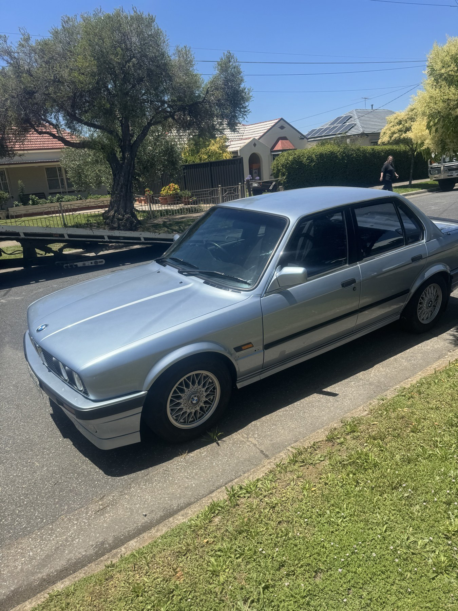
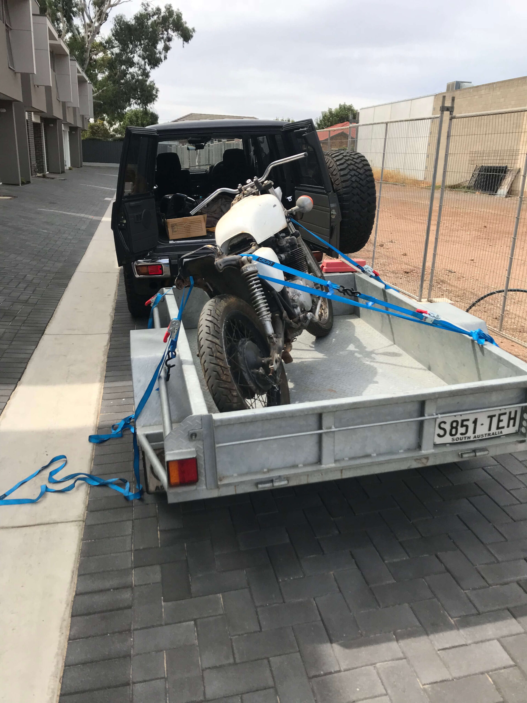

SCHEMATIC / UI / WIRING
ChassisWire
Tools for understanding and building vehicle electrical systems.
Software · Automotive · active · 2026 —

PRODUCT SECURITY ENGINEER
+ BUILDER
01 / about
I work across engineering, cyber, software and complex technical systems.
Outside work, I’m usually rebuilding an old BMW, working on the house, taking photos or starting something else I probably don’t have time for.
02 / experience
Brisbane, Australia · Defence / Cyber / Engineering
Product security assessments, security requirements and cyber assurance across complex Defence systems. Working with multidisciplinary engineering teams to bring security into the product lifecycle.
Cybersecurity planning, risk and assurance across national digital health programs, including Share by Default and My Health Record on FHIR.

Royal Australian Air ForceEngineering · Cyber · CapabilityA decade across electronics engineering, cyber incident-response training, capability development and sustainment, including the MQ-4C Triton and C-130J programs.
03 / projects
Tools for understanding and building vehicle electrical systems.
Software · Automotive · active · 2026 —
Renovating a house, one questionable decision at a time.
House · Renovation · active · 2025 —
Putting an increasingly rare little BMW back the way it should be.
Restoration · Automotive · active · 2026 —
An old chassis, a newer straight-six and considerably more wiring.
Engineering · Automotive · planned · Collecting parts

Learning bodywork by doing essentially all of it the hard way.
Bodywork · Paint · complete · 2023

Bringing a 1970s Honda four back from several decades of neglect.
Restoration · Motorcycle · archive · 2022
Notes from doing things the difficult way.
All projects →04 / photography